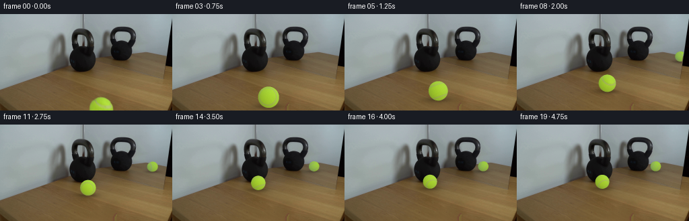

CODING AGENTS AS PIXEL WORLD MODELS
traex/GPT-6.1-Sol · 0155
点击播放 · 原生 RGB 像素
逐轮保存的候选
回放视频、检查图与代码变化。
每份候选均可单独播放。实际图片检查记录在下方工具轨迹中。
候选 01播放与检查图
点击播放 · 原生 RGB 像素

展开代码变化
--- 上一保存版本
+++ 本次保存版本
@@ -0,0 +1,209 @@
+from pathlib import Path
+import numpy as np
+from PIL import Image
+import cv2
+from scipy.ndimage import gaussian_filter
+from scipy.optimize import least_squares, brentq
+import artifact_io
+
+ROOT=Path(__file__).resolve().parent
+W,H=256,144
+IMAGE=np.array(Image.open(ROOT/'first_frame.png').convert('RGB'))
+F=260.136; CX=128.; CY=72.; HORIZON=5.1
+PITCH=np.arctan((CY-HORIZON)/F)
+CT,ST=np.cos(PITCH),np.sin(PITCH)
+
+def ground(u,v):
+ vv=(v-CY)/F
+ d=(CT-vv*ST)/(vv*CT+ST)
+ return np.array([(u-CX)*(d*CT+ST)/F,d])
+
+def camera(p,z):
+ return np.array([p[0],(1-z)*CT-p[1]*ST,p[1]*CT+(1-z)*ST])
+
+def project(p,z=0):
+ c=camera(p,z)
+ return np.array([CX+F*c[0]/c[2],CY+F*c[1]/c[2]])
+
+# The camera, sphere and mirror are measured from the supplied RGB image.
+pts=[]
+for angle in np.linspace(0,2*np.pi,64,endpoint=False):
+ x=150.1+17.95*np.cos(angle); y=141.3+17.95*np.sin(angle)
+ if y<142: pts.append((x,y))
+pts=np.array(pts)
+rays=np.c_[(pts[:,0]-CX)/F,(pts[:,1]-CY)/F,np.ones(len(pts))]
+def fit_error(p):
+ c=camera(p[:2],p[2])
+ return np.linalg.norm(np.cross(c,rays),axis=1)/np.linalg.norm(rays,axis=1)-p[2]
+fit=least_squares(fit_error,[.15,1.5,.12]).x
+START=fit[:2];RADIUS=fit[2]
+KETTLE=ground(123,85)
+DIR=(KETTLE-START)/np.linalg.norm(KETTLE-START)
+END=KETTLE-DIR*(.25+RADIUS)
+DIST=np.linalg.norm(END-START)
+AXIS=np.array([-DIR[1],DIR[0],0.])
+MA=ground(142,72.4);MB=ground(250,98.5)
+MN=np.array([MB[1]-MA[1],MA[0]-MB[0],0.]);MN/=np.linalg.norm(MN)
+
+# Camera-space (right, down, towards lens) to scene-space vectors.
+V_TO_WORLD=np.array([[1,0,0],[0,-ST,-CT],[0,-CT,ST]])
+SEAM_VIEW=np.array([-.2826637,.8894469,-.35914544])
+SEAM_VIEW/=np.linalg.norm(SEAM_VIEW)
+SEAM_WORLD=V_TO_WORLD@SEAM_VIEW
+SHADE=np.array([[145.9684,183.4244,57.1674],
+ [15.10475,18.50460,9.57798],
+ [-14.15018,-21.20849,-8.70834],
+ [17.08687,20.07730,-11.79964]])
+
+# Remove just the starting ball, continuing the photographed wood grain.
+yy,xx=np.mgrid[:H,:W]
+ell=((xx-150.15)/18.9)**2+((yy-141.4)/18.8)**2<1
+extra=(xx>=165)&(xx<=173)&(yy>=132)
+remove=(ell|extra)&(yy>=122)
+clean=cv2.inpaint(IMAGE,remove.astype(np.uint8)*255,4,cv2.INPAINT_TELEA).astype(float)
+# Bottom-truncated hole is filled from the two same-row wood boundaries.
+for y in range(122,H):
+ xs=np.where(remove[y])[0]
+ if not len(xs):continue
+ left=int(xs.min());right=int(xs.max())
+ lcol=IMAGE[y,max(0,left-4):left].mean(axis=0)
+ rcol=IMAGE[y,right+1:min(W,right+5)].mean(axis=0)
+ if not np.isfinite(rcol).all():rcol=lcol
+ p=(xs-left+1)/(right-left+2)
+ linear=lcol[None]*(1-p[:,None])+rcol[None]*p[:,None]
+ srcxs=xs-(left-95)
+ tex=IMAGE[y,srcxs].astype(float)-gaussian_filter(IMAGE.astype(float),(.6,2,0))[y,srcxs]
+ # The subtle donor residual gives the recovered wood photographic texture.
+ clean[y,xs]=.55*clean[y,xs]+.45*linear+tex*.7
+clean=np.clip(clean,0,255).astype(np.float32)
+Image.fromarray(clean.astype(np.uint8)).save(ROOT/'.tmp/background.png')
+
+# Residual from the actual felt, separated from its static illumination.
+x=(xx-150.161)/17.95;y=(yy-141.598)/17.95
+z=np.sqrt(np.maximum(0,1-x*x-y*y))
+sh=SHADE[0]+x[...,None]*SHADE[1]+y[...,None]*SHADE[2]+z[...,None]*SHADE[3]
+residual=IMAGE.astype(float)-sh
+# Remove the seam from this residual: the seam is a rotating surface feature.
+seam0=np.einsum('...i,i->...',np.stack([x,y,z],-1),SEAM_VIEW)
+valid=(x*x+y*y<.89)&(yy>=123)&(yy<143)&(np.abs(seam0+.60645)>.075)
+for ch in range(3):
+ layer=residual[:,:,ch].astype(np.float32)
+ layer[~valid]=0
+ layer=cv2.inpaint(layer,(~valid).astype(np.uint8)*255,3,cv2.INPAINT_NS)
+ residual[:,:,ch]=np.clip(layer,-9,9)
+
+rng=np.random.default_rng(155)
+noise=rng.normal(size=(192,384)).astype(np.float32)
+noise=.7*noise+.7*gaussian_filter(noise,.8)
+noise/=noise.std()
+
+S=3
+sy,sx=np.mgrid[:H*S,:W*S]
+u=(sx+.5)/S-.5;v=(sy+.5)/S-.5
+RAYS=np.stack([(u-CX)/F,(v-CY)/F,np.ones_like(u)],-1)
+RAY2=np.sum(RAYS*RAYS,-1)
+BASE=np.repeat(np.repeat(clean,S,0),S,1)
+MIRROR_MASK=(u<257.2-.171*v)&(u>122+.282*v)&(v<36.6+.251*u)
+
+
+def inverse_roll(normals,angle):
+ a=AXIS;co=np.cos(angle);si=np.sin(angle)
+ return normals*co-np.cross(a,normals)*si+np.einsum('...i,i->...',normals,a)[...,None]*a*(1-co)
+
+def reflected(p):
+ q=np.r_[p,0.]
+ q=q-2*MN*np.dot(q-np.r_[MA,0.],MN)
+ return q[:2]
+
+
+def shadow(frame,p,mirror=False):
+ Q=reflected(p) if mirror else p
+ cp=project(Q)
+ radius=F*RADIUS/camera(Q,RADIUS)[2]
+ dx=u-cp[0];dy=v-cp[1]
+ alpha=.24*np.exp(-.5*((dx/(radius*.90))**2+(dy/(radius*.17+.2))**2))
+ alpha+=.075*np.exp(-.5*(((dx+radius*.25)/(radius*1.1))**2+((dy-radius*.10)/(radius*.29))**2))
+ alpha=np.minimum(alpha,.30)
+ if mirror:alpha*=MIRROR_MASK
+ frame*=1-alpha[...,None]
+
+
+def ball(frame,p,distance,mirror=False):
+ Q=reflected(p) if mirror else p
+ C=camera(Q,RADIUS)
+ dot=np.einsum('...i,i->...',RAYS,C)
+ disc=dot*dot-RAY2*(np.dot(C,C)-RADIUS*RADIUS)
+ mask=disc>0
+ if mirror:mask&=MIRROR_MASK
+ inds=np.where(mask)
+ if not len(inds[0]):return
+ rr=RAYS[inds];dd=disc[inds]
+ param=(dot[inds]-np.sqrt(dd))/RAY2[inds]
+ nc=(rr*param[:,None]-C)/RADIUS
+ nv=np.stack([nc[:,0],nc[:,1],-nc[:,2]],-1)
+ nw=nv@V_TO_WORLD.T
+ if mirror:nw-=2*np.outer(nw@MN,MN)
+ material=inverse_roll(nw,distance/RADIUS)
+ orig=material@V_TO_WORLD
+ lighting=nw@V_TO_WORLD
+ color=SHADE[0]+lighting@SHADE[1:]
+ latitude=np.arcsin(np.clip(material[:,2],-1,1))
+ longitude=np.arctan2(material[:,1],material[:,0])
+ tx=((longitude/(2*np.pi)+.5)*383).astype(np.float32)
+ ty=((latitude/np.pi+.5)*191).astype(np.float32)
+ felt=cv2.remap(noise,tx.reshape(-1,1),ty.reshape(-1,1),cv2.INTER_LINEAR,borderMode=cv2.BORDER_WRAP)[:,0]
+ color+=felt[:,None]*np.array([2.4,2.9,2.1])
+ # Preserve local photographed fibre variations where its hemisphere is known.
+ ox=(150.161+17.95*orig[:,0]).astype(np.float32)
+ oy=(141.598+17.95*orig[:,1]).astype(np.float32)
+ observed=cv2.remap(residual.astype(np.float32),ox[:,None],oy[:,None],cv2.INTER_LINEAR,borderMode=cv2.BORDER_REFLECT)[:,0]
+ weight=np.clip((orig[:,2]-.28)/.30,0,1)*np.clip((142-oy)/3,0,1)
+ color+=observed*weight[:,None]*.65
+ # Two softly stitched curved felt-panel borders, rigidly rolling with the ball.
+ sd=np.abs(np.abs(material@SEAM_WORLD)-.6064536)
+ seam=np.exp(-.5*(sd/.037)**2)*.88
+ thread=color*np.array([1.01,.87,1.00])+np.array([0,0,48])
+ color=color*(1-seam[:,None])+thread*seam[:,None]
+ # A darker narrow join gives the fibres a recessed, not painted-on, edge.
+ edge=np.exp(-.5*((sd-.061)/.012)**2)*.035
+ color*=1-edge[:,None]
+ if mirror:color=color*np.array([.92,.935,.97])+np.array([1,2,2])
+ frame[inds]=np.clip(color,0,255)
+
+
+def position(t):
+ collision=3.75
+ if t<=collision:
+ q=t/collision
+ # Mild rolling resistance: no arbitrary easing of the physical motion.
+ s=DIST*(1.08*q-.08*q*q)
+ else:
+ dt=t-collision
+ incoming=DIST*.92/collision
+ recoil=.16*incoming
+ friction=.09
+ duration=recoil/friction
+ dt=min(dt,duration)
+ s=DIST-(recoil*dt-.5*friction*dt*dt)
+ return START+DIR*s,s
+
+
+def generate():
+ frames=[IMAGE.copy()]
+ for i in range(1,20):
+ p,travel=position(i/4)
+ canvas=BASE.copy()
+ shadow(canvas,p,True)
+ ball(canvas,p,travel,True)
+ shadow(canvas,p,False)
+ ball(canvas,p,travel,False)
+ frame=canvas.reshape(H,S,W,S,3).mean((1,3))
+ frames.append(np.clip(np.rint(frame),0,255).astype(np.uint8))
+ frames=np.stack(frames)
+ assert np.array_equal(frames[0],IMAGE)
+ artifact_io.save(frames,ROOT)
+ for i in [1,5,10,15,19]:
+ p,s=position(i/4)
+ print(i,'sphere',project(p,RADIUS).round(2),'mirror',project(reflected(p),RADIUS).round(2),'radius',round(F*RADIUS/camera(p,RADIUS)[2],2))
+
+if __name__=='__main__':generate()
候选 02播放与检查图
点击播放 · 原生 RGB 像素
展开代码变化
--- 上一保存版本
+++ 本次保存版本
@@ -47,13 +47,13 @@
# Camera-space (right, down, towards lens) to scene-space vectors.
V_TO_WORLD=np.array([[1,0,0],[0,-ST,-CT],[0,-CT,ST]])
-SEAM_VIEW=np.array([-.2826637,.8894469,-.35914544])
+SEAM_VIEW=np.array([-.2426821,.95418353,-.17504053])
SEAM_VIEW/=np.linalg.norm(SEAM_VIEW)
SEAM_WORLD=V_TO_WORLD@SEAM_VIEW
-SHADE=np.array([[145.9684,183.4244,57.1674],
- [15.10475,18.50460,9.57798],
- [-14.15018,-21.20849,-8.70834],
- [17.08687,20.07730,-11.79964]])
+SHADE=np.array([[145.43397,183.34763,58.54921],
+ [14.34359,17.85672,11.13850],
+ [-18.41672,-26.08596,-5.82980],
+ [14.22313,15.15571,-14.57374]])
# Remove just the starting ball, continuing the photographed wood grain.
yy,xx=np.mgrid[:H,:W]
@@ -80,12 +80,19 @@
# Residual from the actual felt, separated from its static illumination.
x=(xx-150.161)/17.95;y=(yy-141.598)/17.95
-z=np.sqrt(np.maximum(0,1-x*x-y*y))
+initial_rays=np.stack([(xx-CX)/F,(yy-CY)/F,np.ones_like(xx)],-1)
+initial_camera=camera(START,RADIUS)
+initial_dot=initial_rays@initial_camera
+initial_r2=np.sum(initial_rays**2,-1)
+initial_disc=initial_dot**2-initial_r2*(initial_camera@initial_camera-RADIUS**2)
+initial_param=(initial_dot-np.sqrt(np.maximum(0,initial_disc)))/initial_r2
+initial_normal=(initial_rays*initial_param[...,None]-initial_camera)/RADIUS
+x,y,z=initial_normal[...,0],initial_normal[...,1],-initial_normal[...,2]
sh=SHADE[0]+x[...,None]*SHADE[1]+y[...,None]*SHADE[2]+z[...,None]*SHADE[3]
residual=IMAGE.astype(float)-sh
# Remove the seam from this residual: the seam is a rotating surface feature.
seam0=np.einsum('...i,i->...',np.stack([x,y,z],-1),SEAM_VIEW)
-valid=(x*x+y*y<.89)&(yy>=123)&(yy<143)&(np.abs(seam0+.60645)>.075)
+valid=(initial_disc>0)&(((xx-150.161)/17.95)**2+((yy-141.598)/17.95)**2<.89)&(yy>=123)&(yy<143)&(np.abs(seam0+.62775)>.075)
for ch in range(3):
layer=residual[:,:,ch].astype(np.float32)
layer[~valid]=0
@@ -160,7 +167,7 @@
weight=np.clip((orig[:,2]-.28)/.30,0,1)*np.clip((142-oy)/3,0,1)
color+=observed*weight[:,None]*.65
# Two softly stitched curved felt-panel borders, rigidly rolling with the ball.
- sd=np.abs(np.abs(material@SEAM_WORLD)-.6064536)
+ sd=np.abs(np.abs(material@SEAM_WORLD)-.6277468)
seam=np.exp(-.5*(sd/.037)**2)*.88
thread=color*np.array([1.01,.87,1.00])+np.array([0,0,48])
color=color*(1-seam[:,None])+thread*seam[:,None]
候选 03播放与检查图
可观测工具轨迹
实际执行的命令与返回图片。
命令 1exit 0
/bin/bash -lc "ls -la && cat prompt.txt && printf '\\n---RULES---\\n' && cat GENERATION_RULES.md"
命令 2exit 0
/bin/bash -lc "cat artifact_io.py && python - <<'PY'
from PIL import Image
import numpy as np
im=np.array(Image.open('first_frame.png').convert('RGB'))
print(im.shape)
for y in range(0,144,4):
s=''
for x in range(0,256,4):
r,g,b=im[y:y+4,x:x+4].mean((0,1)); v=(r+g+b)/3
if g>r*1.12 and g>b*1.35: c='G'
elif r>1.25*g and r>1.4*b: c='w'
else: c=' .:-=+*#%@'[min(9,int(v/256*10))]
s+=c
print(f'{y:03d} {s}')
print('green bbox')
m=(im[:,:,1]>im[:,:,0]*1.12)&(im[:,:,1]>im[:,:,2]*1.35)
ys,xs=np.where(m); print(xs.min(),xs.max(),ys.min(),ys.max())
PY"命令 3exit 0
/bin/bash -lc "python - <<'PY'
from PIL import Image
import numpy as np
im=np.array(Image.open('first_frame.png'))
# ANSI disallowed visually; numeric symbol on intensity and color
for y in range(10,144,2):
s=''
for x in range(60,194,2):
r,g,b=im[y:y+2,x:x+2,:3].mean((0,1)); v=(r+g+b)/3
if g>r*1.07 and g>b*1.35: c='G'
elif r>1.25*g and r>1.4*b: c='w'
else: c=' .,:;ox%#@'[min(9,int(v/256*10))]
s+=c
print(f'{y:03d} {s}')
print('ball patches')
for y in range(116,144,2):
print(y,[(x,tuple(im[y,x,:3])) for x in range(128,177,4)])
PY"命令 4exit 0
/bin/bash -lc "python - <<'PY'
import cv2,numpy as np
im=cv2.imread('first_frame.png'); gr=cv2.cvtColor(im,cv2.COLOR_BGR2GRAY); ed=cv2.Canny(gr,30,70)
l=cv2.HoughLinesP(ed,1,np.pi/720, threshold=20, minLineLength=25,maxLineGap=6)
print(l[:,0] if l is not None else '')
# full greyscale high-resolution text
for y in range(0,144,3):
print(f'{y:03}', ''.join(' .:-=+*#%@'[int(i)//26] for i in gr[y,::3]))
PY"命令 5exit 0
/bin/bash -lc "python - <<'PY'
from PIL import Image
import numpy as np
im=np.array(Image.open('first_frame.png'))
for y in [0,10,20,30,40,50,60,70,80,85,90,95]:
print('\\ny',y)
print(' '.join(f'{x}:{tuple(im[y,x])}' for x in range(65,206,5)))
# silhouette text better each pixel black structure
for y in range(16,89):
print(f'{y:02}', ''.join(' ' if np.mean(c)>140 else '.' if np.mean(c)>90 else ':' if np.mean(c)>55 else '+' if np.mean(c)>30 else '#' if np.mean(c)>12 else '@' for c in im[y,94:143]))
PY"命令 6exit 0
/bin/bash -lc "python - <<'PY'
import numpy as np
from PIL import Image
im=np.array(Image.open('first_frame.png'))[:,:,:3].astype(float)
# characterize wood and wall every pixel
for y in range(45,96):
s=''
for x in range(120,256,2):
r,g,b=im[y,x]
if r>g+8 and g>b+12: c='W'
elif max(r,g,b)<40: c='#'
elif max(r,g,b)<80: c=':'
elif max(r,g,b)<120: c='.'
else:c=' '
s+=c
print(f'{y:03}',s)
PY"命令 7exit 0
/bin/bash -lc "python - <<'PY'
import numpy as np
from PIL import Image
im=np.array(Image.open('first_frame.png')).astype(float)
for x in range(70,250,10):
y=int(94+(x-90)*49/149)
print(x,y,[(dy,tuple(im[min(143,max(0,y+dy)),x].astype(int)))for dy in [-6,-3,0,3,6]])
# 2-pixel coarse red channel region
for y in range(78,144,2):
print(f'{y:03}', ''.join('0123456789ABCDEF'[min(15,int(im[y,x,0]/16))]for x in range(60,256,2)))
PY"命令 8exit 0
/bin/bash -lc "python - <<'PY'
import numpy as np
from scipy.optimize import least_squares
def calc(p,u,v):
c,f,h=p
def un(u,v):return np.array([(u-c)/(v-h),f/(v-h)])
a=un(142,69);b=un(246,97);d=b-a;n=np.array([-d[1],d[0]]);n/=np.linalg.norm(n)
X=un(u,v);R=X-2*n*np.dot(X-a,n)
return np.array([c+f*R[0]/R[1],h+f/R[1]]),X,R,n
for p in [(128,260,-40),(128,200,-20),(128,300,-50),(128,150,0)]:
print(p,calc(p,123,85)[0],calc(p,151,159)[0],calc(p,127,107)[0])
res=least_squares(lambda p:np.r_[calc(p,123,85)[0]-[181,69],(p[0]-128)/100,(p[2]+30)/100],x0=[128,200,-30],bounds=([40,80,-200],[200,700,30]))
print('fit',res.x,calc(res.x,123,85)[0],calc(res.x,151,159)[0],calc(res.x,127,107)[0])
PY"命令 9exit 0
/bin/bash -lc "python - <<'PY' import numpy as np from scipy.optimize import least_squares # vertical mirror at base corners with full pinhole tilt camera cx,cy=128,72 def model(p,u,v,z=0): f,hor=p; theta=np.arctan((cy-hor)/f); ct=np.cos(theta);st=np.sin(theta) # H set to 1, basis point intersections ground def ground(u,v): vv=(v-cy)/f D=(ct-vv*st)/(vv*ct+st) return np.array([(u-cx)/f*(D*ct+st),D]) A=ground(142,69); B=ground(250,98); n=np.array([B[1]-A[1],A[0]-B[0]]); n/=np.linalg.norm(n) X=ground(u,v); RX=X-2*n*np.dot(X-A,n) return [cx+f*RX[0]/(RX[1]*ct+st),cy+f*(ct-RX[1]*st)/(RX[1]*ct+st)] for hor in [0,30,45,50,55,60]: for f in [120,160,190]: print(f,hor,np.round(model((f,hor),123,85),1),np.round(model((f,hor),151,160),1)) PY"
命令 10exit 0
/bin/bash -lc "python - <<'PY'
import numpy as np
from PIL import Image
from scipy.optimize import least_squares
im=np.array(Image.open('first_frame.png')).astype(float)
m=(im[:,:,1]-im[:,:,0]>5)&(im[:,:,1]-im[:,:,2]>60)
pts=[]
for y in range(120,144):
xs=np.where(m[y])[0]
if len(xs):
print(y,xs.min(),xs.max()); pts.extend([(xs.min(),y),(xs.max(),y)])
p=np.array(pts)
res=least_squares(lambda a:np.sqrt((p[:,0]-a[0])**2+(p[:,1]-a[1])**2)-a[2],[151,141,18])
print('circle',res.x,'resid',np.std(res.fun))
PY"命令 11exit 0
/bin/bash -lc "python - <<'PY' import numpy as np from scipy.optimize import least_squares def calc(p,u,v,z=0,ref=True): f,hor,Ay,By=p;cy=72;theta=np.arctan((cy-hor)/f); ct=np.cos(theta);st=np.sin(theta) def ground(u,v): vv=(v-cy)/f D=(ct-vv*st)/(vv*ct+st) return np.array([(u-128)/f*(D*ct+st),D]) A=ground(142,Ay);B=ground(250,By);n=np.array([B[1]-A[1],A[0]-B[0]]);n/=np.linalg.norm(n) X=ground(u,v) if ref: X=X-2*n*np.dot(X-A,n) D=X[1]*ct+(1-z)*st return np.array([128+f*X[0]/D,cy+f*((1-z)*ct-X[1]*st)/D]) def fun(p): ht=0.65 # derive height z to hit top from scipy.optimize import brentq z=brentq(lambda z:calc(p,123,85,z,False)[1]-22,0,1) return np.r_[(calc(p,123,85)-[181,69]),calc(p,123,85,z)[1]-18,(p[1]-15)/20,(p[2]-69)/2,(p[3]-98)/2] r=least_squares(fun,[180,10,69,98],bounds=([80,-100,65,93],[400,55,77,103])) print(r.x,fun(r.x)) for u,v in [(150,158),(143,139),(138,123),(133,108),(128,97)]: print(u,v,calc(r.x,u,v)) PY"
命令 12exit 0
/bin/bash -lc "python - <<'PY'
import numpy as np
l=np.cross([142,71,1],[250,98,1]).astype(float)
p=np.array([123,85,1]);q=np.array([181,69,1]);V=p+np.dot(l,p)/np.dot(l,q)*q
H=np.eye(3)-2*np.outer(V,l)/np.dot(l,V)
print('V',V/V[2], 'H',H)
for x,y in [(150,158),(147,145),(143,130),(139,118),(135,106),(131,99),(128,95)]:
p=np.array([x,y,1]);q=H@p;q=q/q[2];print(x,y,q,'scalecenter',np.linalg.det(H)/(H@p)[2]**3)
PY"命令 13exit 0
/bin/bash -lc "python - <<'PY'
import numpy as np
from PIL import Image
im=np.array(Image.open('first_frame.png')).astype(float)
for y in range(54,103):
print(f'{y:03}', ''.join('0123456789ABCDEF'[min(15,int(im[y,x,0]/16))]for x in range(138,254)))
# gradients per columns
for x in [143,150,160,170,190,205,220,235,245]:
g=np.linalg.norm(im[1:,x]-im[:-1,x],axis=1)
print(x,sorted([(round(g[y],1),y)for y in range(55,100)],reverse=True)[:10])
PY"命令 14exit 0
/bin/bash -lc "python - <<'PY' import numpy as np l=np.cross([142,71,1],[250,98,1]).astype(float);p=np.array([123,85,1]);q=np.array([181,69,1]);V=p+np.dot(l,p)/np.dot(l,q)*q;H=np.eye(3)-2*np.outer(V,l)/np.dot(l,V) print(H[2]@p) for u,v in [(150,158.5),(145,140),(140,124),(135,110),(130,99),(126,94)]: P=np.array([u,v,1]);R=H@P; print(P[:2],R[:2]/R[2],(H[2]@p)/R[2]*.81) PY"
命令 15exit 0
/bin/bash -lc "mkdir -p .tmp && cat > .tmp/geometry.py <<'PY'
import numpy as np
from scipy.optimize import least_squares
f=260.136;h=5.1;cy=72;cx=128
t=np.arctan((cy-h)/f);ct=np.cos(t);st=np.sin(t)
def ground(u,v):
vv=(v-cy)/f
D=(ct-vv*st)/(vv*ct+st)
return np.array([(u-cx)/f*(D*ct+st),D])
def proj(P,z=0):
x,d=P; zc=d*ct+(1-z)*st
return np.array([cx+f*x/zc,cy+f*((1-z)*ct-d*st)/zc])
pts=[]
for a in np.linspace(0,2*np.pi,64,endpoint=False):
x=150.1+17.95*np.cos(a);y=141.3+17.95*np.sin(a)
if y<142:pts.append([x,y])
pts=np.array(pts);rays=np.c_[(pts[:,0]-cx)/f,(pts[:,1]-cy)/f,np.ones(len(pts))]
def cam(X,D,r):return np.array([X,(1-r)*ct-D*st,D*ct+(1-r)*st])
def error(p):
C=cam(*p)
return np.linalg.norm(np.cross(C,rays),axis=1)/np.linalg.norm(rays,axis=1)-p[2]
res=least_squares(error,[.15,1.5,.12]);X,D,r=res.x
print('initial',res.x,proj([X,D],r),proj([X,D]),error(res.x).std())
K=ground(123,85);P=np.array([X,D]);length=np.linalg.norm(K-P);unit=(K-P)/length
print('k',K,'source',P,'len',length)
for Kr in [.2,.25,.3,.4]:
end=K-unit*(Kr+r)
print('Kradius',Kr,'end',end,'contact',proj(end),'center',proj(end,r),'pixelradius',f*r/cam(*end,r)[2])
A=ground(142,72.4);B=ground(250,98.5);n=np.array([B[1]-A[1],A[0]-B[0]]);n/=np.linalg.norm(n)
print('mirror',A,B,n)
for frac in [0,.2,.4,.6,.8,1]:
end=K-unit*(.25+r);Q=P+(end-P)*frac;RQ=Q-2*n*np.dot(Q-A,n)
print(frac,proj(Q,r),proj(RQ,r),f*r/cam(*RQ,r)[2])
PY
python .tmp/geometry.py"命令 16exit 0
/bin/bash -lc "python - <<'PY'
from PIL import Image
import numpy as np
im=np.array(Image.open('first_frame.png')).astype(float)
for y in range(122,144):
s=''
for x in range(130,173):
r,g,b=im[y,x]
if g-r<3: s+=' '
elif b/g>.53:s+='O'
elif b/g>.43:s+='o'
elif b/g>.34:s+=':'
elif b/g>.27:s+='.'
else:s+='G'
print(f'{y:03}',s)
PY"命令 17exit 0
/bin/bash -lc "python - <<'PY'
from PIL import Image
import numpy as np
im=np.array(Image.open('first_frame.png')).astype(float)
for y in range(0,120,3):
ar=im[y,235:256].mean(1); x=235+np.argmin(ar)
print(y,x,round(ar.min(),1),' '.join(str(round(float(v)))for v in ar))
PY"命令 18exit 0
/bin/bash -lc "python - <<'PY' import numpy as np pts=np.array([[140,130],[143,132],[146,134],[150,136],[154,137.5],[158,138],[162,138],[165,137.5]]) x=(pts[:,0]-150.1)/17.9;y=(pts[:,1]-141.3)/17.9;z=np.sqrt(1-x*x-y*y);P=np.c_[x,y,z] mu=P.mean(0);u,s,v=np.linalg.svd(P-mu);n=v[-1];print(n,'offset',mu@n,'residual',P@n-mu@n) PY"
命令 19exit 0
/bin/bash -lc "python - <<'PY'
import numpy as np
from PIL import Image
im=np.array(Image.open('first_frame.png')).astype(float);yy,xx=np.mgrid[0:144,0:256];x=(xx-150.16)/17.9;y=(yy-141.6)/17.9;z=np.sqrt(np.maximum(0,1-x*x-y*y));m=(x*x+y*y<.83)&(im[:,:,2]<im[:,:,1]*.285)&(im[:,:,1]>150)&(yy>122)
A=np.stack([np.ones(x.shape),x,y,z],-1)[m];B=im[m];fit=np.linalg.lstsq(A,B,rcond=None)[0];print(fit,'std',np.std(B-A@fit,axis=0),'count',m.sum())
for n in [[0,0,1],[0,1,0],[0,-1,0],[-1,0,0],[1,0,0]]:print(n,np.array([1]+n)@fit)
PY"命令 20exit 0
/bin/bash -lc "cat >> .tmp/geometry.py <<'PY'
from scipy.optimize import brentq
z=brentq(lambda z:proj(K,z)[1]-22,0,1)
RK=K-2*n*np.dot(K-A,n)
print('kettle reflection base',proj(RK),'top',proj(RK,z),'z',z)
PY
python .tmp/geometry.py | tail -2"命令 21exit 0
/bin/bash -lc "cat > generate.py <<'PY'
from pathlib import Path
import numpy as np
from PIL import Image
import cv2
from scipy.ndimage import gaussian_filter
from scipy.optimize import least_squares, brentq
import artifact_io
ROOT=Path(__file__).resolve().parent
W,H=256,144
IMAGE=np.array(Image.open(ROOT/'first_frame.png').convert('RGB'))
F=260.136; CX=128.; CY=72.; HORIZON=5.1
PITCH=np.arctan((CY-HORIZON)/F)
CT,ST=np.cos(PITCH),np.sin(PITCH)
def ground(u,v):
vv=(v-CY)/F
d=(CT-vv*ST)/(vv*CT+ST)
return np.array([(u-CX)*(d*CT+ST)/F,d])
def camera(p,z):
return np.array([p[0],(1-z)*CT-p[1]*ST,p[1]*CT+(1-z)*ST])
def project(p,z=0):
c=camera(p,z)
return np.array([CX+F*c[0]/c[2],CY+F*c[1]/c[2]])
# The camera, sphere and mirror are measured from the supplied RGB image.
pts=[]
for angle in np.linspace(0,2*np.pi,64,endpoint=False):
x=150.1+17.95*np.cos(angle); y=141.3+17.95*np.sin(angle)
if y<142: pts.append((x,y))
pts=np.array(pts)
rays=np.c_[(pts[:,0]-CX)/F,(pts[:,1]-CY)/F,np.ones(len(pts))]
def fit_error(p):
c=camera(p[:2],p[2])
return np.linalg.norm(np.cross(c,rays),axis=1)/np.linalg.norm(rays,axis=1)-p[2]
fit=least_squares(fit_error,[.15,1.5,.12]).x
START=fit[:2];RADIUS=fit[2]
KETTLE=ground(123,85)
DIR=(KETTLE-START)/np.linalg.norm(KETTLE-START)
END=KETTLE-DIR*(.25+RADIUS)
DIST=np.linalg.norm(END-START)
AXIS=np.array([-DIR[1],DIR[0],0.])
MA=ground(142,72.4);MB=ground(250,98.5)
MN=np.array([MB[1]-MA[1],MA[0]-MB[0],0.]);MN/=np.linalg.norm(MN)
# Camera-space (right, down, towards lens) to scene-space vectors.
V_TO_WORLD=np.array([[1,0,0],[0,-ST,-CT],[0,-CT,ST]])
SEAM_VIEW=np.array([-.2826637,.8894469,-.35914544])
SEAM_VIEW/=np.linalg.norm(SEAM_VIEW)
SEAM_WORLD=V_TO_WORLD@SEAM_VIEW
SHADE=np.array([[145.9684,183.4244,57.1674],
[15.10475,18.50460,9.57798],
[-14.15018,-21.20849,-8.70834],
[17.08687,20.07730,-11.79964]])
# Remove just the starting ball, continuing the photographed wood grain.
yy,xx=np.mgrid[:H,:W]
ell=((xx-150.15)/18.9)**2+((yy-141.4)/18.8)**2<1
extra=(xx>=165)&(xx<=173)&(yy>=132)
remove=(ell|extra)&(yy>=122)
clean=cv2.inpaint(IMAGE,remove.astype(np.uint8)*255,4,cv2.INPAINT_TELEA).astype(float)
# Bottom-truncated hole is filled from the two same-row wood boundaries.
for y in range(122,H):
xs=np.where(remove[y])[0]
if not len(xs):continue
left=int(xs.min());right=int(xs.max())
lcol=IMAGE[y,max(0,left-4):left].mean(axis=0)
rcol=IMAGE[y,right+1:min(W,right+5)].mean(axis=0)
if not np.isfinite(rcol).all():rcol=lcol
p=(xs-left+1)/(right-left+2)
linear=lcol[None]*(1-p[:,None])+rcol[None]*p[:,None]
srcxs=xs-(left-95)
tex=IMAGE[y,srcxs].astype(float)-gaussian_filter(IMAGE.astype(float),(.6,2,0))[y,srcxs]
# The subtle donor residual gives the recovered wood photographic texture.
clean[y,xs]=.55*clean[y,xs]+.45*linear+tex*.7
clean=np.clip(clean,0,255).astype(np.float32)
Image.fromarray(clean.astype(np.uint8)).save(ROOT/'.tmp/background.png')
# Residual from the actual felt, separated from its static illumination.
x=(xx-150.161)/17.95;y=(yy-141.598)/17.95
z=np.sqrt(np.maximum(0,1-x*x-y*y))
sh=SHADE[0]+x[...,None]*SHADE[1]+y[...,None]*SHADE[2]+z[...,None]*SHADE[3]
residual=IMAGE.astype(float)-sh
# Remove the seam from this residual: the seam is a rotating surface feature.
seam0=np.einsum('...i,i->...',np.stack([x,y,z],-1),SEAM_VIEW)
valid=(x*x+y*y<.89)&(yy>=123)&(yy<143)&(np.abs(seam0+.60645)>.075)
for ch in range(3):
layer=residual[:,:,ch].astype(np.float32)
layer[~valid]=0
layer=cv2.inpaint(layer,(~valid).astype(np.uint8)*255,3,cv2.INPAINT_NS)
residual[:,:,ch]=np.clip(layer,-9,9)
rng=np.random.default_rng(155)
noise=rng.normal(size=(192,384)).astype(np.float32)
noise=.7*noise+.7*gaussian_filter(noise,.8)
noise/=noise.std()
S=3
sy,sx=np.mgrid[:H*S,:W*S]
u=(sx+.5)/S-.5;v=(sy+.5)/S-.5
RAYS=np.stack([(u-CX)/F,(v-CY)/F,np.ones_like(u)],-1)
RAY2=np.sum(RAYS*RAYS,-1)
BASE=np.repeat(np.repeat(clean,S,0),S,1)
MIRROR_MASK=(u<257.2-.171*v)&(u>122+.282*v)&(v<36.6+.251*u)
def inverse_roll(normals,angle):
a=AXIS;co=np.cos(angle);si=np.sin(angle)
return normals*co-np.cross(a,normals)*si+np.einsum('...i,i->...',normals,a)[...,None]*a*(1-co)
def reflected(p):
q=np.r_[p,0.]
q=q-2*MN*np.dot(q-np.r_[MA,0.],MN)
return q[:2]
def shadow(frame,p,mirror=False):
Q=reflected(p) if mirror else p
cp=project(Q)
radius=F*RADIUS/camera(Q,RADIUS)[2]
dx=u-cp[0];dy=v-cp[1]
alpha=.24*np.exp(-.5*((dx/(radius*.90))**2+(dy/(radius*.17+.2))**2))
alpha+=.075*np.exp(-.5*(((dx+radius*.25)/(radius*1.1))**2+((dy-radius*.10)/(radius*.29))**2))
alpha=np.minimum(alpha,.30)
if mirror:alpha*=MIRROR_MASK
frame*=1-alpha[...,None]
def ball(frame,p,distance,mirror=False):
Q=reflected(p) if mirror else p
C=camera(Q,RADIUS)
dot=np.einsum('...i,i->...',RAYS,C)
disc=dot*dot-RAY2*(np.dot(C,C)-RADIUS*RADIUS)
mask=disc>0
if mirror:mask&=MIRROR_MASK
inds=np.where(mask)
if not len(inds[0]):return
rr=RAYS[inds];dd=disc[inds]
param=(dot[inds]-np.sqrt(dd))/RAY2[inds]
nc=(rr*param[:,None]-C)/RADIUS
nv=np.stack([nc[:,0],nc[:,1],-nc[:,2]],-1)
nw=nv@V_TO_WORLD.T
if mirror:nw-=2*np.outer(nw@MN,MN)
material=inverse_roll(nw,distance/RADIUS)
orig=material@V_TO_WORLD
lighting=nw@V_TO_WORLD
color=SHADE[0]+lighting@SHADE[1:]
latitude=np.arcsin(np.clip(material[:,2],-1,1))
longitude=np.arctan2(material[:,1],material[:,0])
tx=((longitude/(2*np.pi)+.5)*383).astype(np.float32)
ty=((latitude/np.pi+.5)*191).astype(np.float32)
felt=cv2.remap(noise,tx.reshape(-1,1),ty.reshape(-1,1),cv2.INTER_LINEAR,borderMode=cv2.BORDER_WRAP)[:,0]
color+=felt[:,None]*np.array([2.4,2.9,2.1])
# Preserve local photographed fibre variations where its hemisphere is known.
ox=(150.161+17.95*orig[:,0]).astype(np.float32)
oy=(141.598+17.95*orig[:,1]).astype(np.float32)
observed=cv2.remap(residual.astype(np.float32),ox[:,None],oy[:,None],cv2.INTER_LINEAR,borderMode=cv2.BORDER_REFLECT)[:,0]
weight=np.clip((orig[:,2]-.28)/.30,0,1)*np.clip((142-oy)/3,0,1)
color+=observed*weight[:,None]*.65
# Two softly stitched curved felt-panel borders, rigidly rolling with the ball.
sd=np.abs(np.abs(material@SEAM_WORLD)-.6064536)
seam=np.exp(-.5*(sd/.037)**2)*.88
thread=color*np.array([1.01,.87,1.00])+np.array([0,0,48])
color=color*(1-seam[:,None])+thread*seam[:,None]
# A darker narrow join gives the fibres a recessed, not painted-on, edge.
edge=np.exp(-.5*((sd-.061)/.012)**2)*.035
color*=1-edge[:,None]
if mirror:color=color*np.array([.92,.935,.97])+np.array([1,2,2])
frame[inds]=np.clip(color,0,255)
def position(t):
collision=3.75
if t<=collision:
q=t/collision
# Mild rolling resistance: no arbitrary easing of the physical motion.
s=DIST*(1.08*q-.08*q*q)
else:
dt=t-collision
incoming=DIST*.92/collision
recoil=.16*incoming
friction=.09
duration=recoil/friction
dt=min(dt,duration)
s=DIST-(recoil*dt-.5*friction*dt*dt)
return START+DIR*s,s
def generate():
frames=[IMAGE.copy()]
for i in range(1,20):
p,travel=position(i/4)
canvas=BASE.copy()
shadow(canvas,p,True)
ball(canvas,p,travel,True)
shadow(canvas,p,False)
ball(canvas,p,travel,False)
frame=canvas.reshape(H,S,W,S,3).mean((1,3))
frames.append(np.clip(np.rint(frame),0,255).astype(np.uint8))
frames=np.stack(frames)
assert np.array_equal(frames[0],IMAGE)
artifact_io.save(frames,ROOT)
for i in [1,5,10,15,19]:
p,s=position(i/4)
print(i,'sphere',project(p,RADIUS).round(2),'mirror',project(reflected(p),RADIUS).round(2),'radius',round(F*RADIUS/camera(p,RADIUS)[2],2))
if __name__=='__main__':generate()
PY
python generate.py"命令 22exit 0
/bin/bash -lc "python - <<'PY'
import generate as g
import numpy as np
from PIL import Image
c=g.BASE.copy();g.shadow(c,g.START);g.ball(c,g.START,0)
im=np.uint8(np.clip(c.reshape(144,3,256,3,3).mean((1,3)),0,255))
Image.fromarray(im).save('.tmp/analytic_initial.png')
d=im.astype(float)-g.IMAGE
for name,mask in [('ball',(g.xx-150.16)**2+(g.yy-141.6)**2<17**2),('old outside',(g.xx>129)&(g.xx<176)&(g.yy>121)&(((g.xx-150.16)**2+(g.yy-141.6)**2)>20**2))]:
print(name,'mean',d[mask].mean(0),'abs',np.abs(d[mask]).mean(0),'max',np.max(np.abs(d[mask])))
for i in [1,5,10,15,19]:
im=np.array(Image.open(f'frames/{i:02d}.png'))
m=(im[:,:,1].astype(float)-im[:,:,0]>4)&(im[:,:,1].astype(float)-im[:,:,2]>50)
print('\\nframe',i)
for y in range(53,144,3):
s=''
for x in range(90,256,2):
r,gg,b=im[y,x].astype(float)
if gg-r>4 and gg-b>50:c='G'
elif r>gg+10 and gg>b+12:c='w'
elif max(r,gg,b)<35:c='#'
elif max(r,gg,b)<80:c=':'
else:c='.'
s+=c
print(f'{y:03}',s)
PY"命令 23exit 0
/bin/bash -lc "python - <<'PY'
from PIL import Image
import numpy as np
ims=[np.array(Image.open(p)).astype(float) for p in ['first_frame.png','.tmp/analytic_initial.png']]
for im in ims:
print('\\n')
for y in range(124,144):
s=''
for x in range(133,168):
r,g,b=im[y,x]
if g-r<3:s+=' '
elif b/g>.53:s+='O'
elif b/g>.43:s+='o'
elif b/g>.34:s+=':'
elif b/g>.27:s+='.'
else:s+='G'
print(f'{y:03}',s)
PY"命令 24exit 0
/bin/bash -lc "python - <<'PY' import generate as g import numpy as np pts=np.array([[140,130],[143,132],[146,134],[150,136],[154,137.5],[158,138],[162,138],[165,137.5]]) rays=np.c_[(pts[:,0]-g.CX)/g.F,(pts[:,1]-g.CY)/g.F,np.ones(len(pts))] C=g.camera(g.START,g.RADIUS);dot=rays@C;d=dot**2-(rays*rays).sum(1)*((C*C).sum()-g.RADIUS**2);par=(dot-np.sqrt(d))/(rays*rays).sum(1) nc=(rays*par[:,None]-C)/g.RADIUS nv=np.stack([nc[:,0],nc[:,1],-nc[:,2]],-1) mu=nv.mean(0);_,_,vt=np.linalg.svd(nv-mu);n=vt[-1]; print(n,mu@n,'resid',nv@n-mu@n) PY"
命令 25exit 0
/bin/bash -lc "python - <<'PY' import generate as g import numpy as np rr=np.stack([(g.xx-g.CX)/g.F,(g.yy-g.CY)/g.F,np.ones_like(g.xx)],-1);C=g.camera(g.START,g.RADIUS);dot=rr@C;dd=dot*dot-(rr*rr).sum(-1)*(np.dot(C,C)-g.RADIUS*g.RADIUS);lam=(dot-np.sqrt(np.maximum(0,dd)))/(rr*rr).sum(-1);nc=(rr*lam[...,None]-C)/g.RADIUS;nv=np.stack([nc[...,0],nc[...,1],-nc[...,2]],-1) im=g.IMAGE.astype(float);mask=(dd>0)&((g.xx-150.1)**2+(g.yy-141.3)**2<16**2)&(im[:,:,2]/np.maximum(1,im[:,:,1])<.28)&(im[:,:,1]>145) A=np.c_[np.ones(mask.sum()),nv[mask]];B=im[mask];fit=np.linalg.lstsq(A,B,rcond=None)[0];print(fit,np.std(B-A@fit,0)) PY"
命令 26exit 0
/bin/bash -lc "python generate.py && python - <<'PY'
import generate as g
import numpy as np
from PIL import Image
c=g.BASE.copy();g.shadow(c,g.START);g.ball(c,g.START,0)
im=np.uint8(np.clip(c.reshape(144,3,256,3,3).mean((1,3)),0,255))
Image.fromarray(im).save('.tmp/analytic_initial.png')
m=(g.xx-150.16)**2+(g.yy-141.6)**2<17**2
d=im.astype(float)-g.IMAGE
print('initial numerical reconstruction mean absolute error',np.abs(d[m]).mean(0))
p=np.load('pixels.npz')['pixels']; print('saved',p.shape,p.dtype)
frame0=np.array(Image.open('frames/00.png'));print('pixel identical',np.array_equal(frame0,g.IMAGE))
for i in [1,6,15,19]:
im=np.array(Image.open(f'frames/{i:02}.png'))
# scene outside dynamic table and ball patches remains exact
print(i,'background exact',np.array_equal(im[:50,:120],g.IMAGE[:50,:120]),'changed pixels',np.sum(np.any(im"'!=g.IMAGE,-1)))
PY'保存候选 3 份；完成命令 26 次；可验证图片返回 0 张。原始 API 响应与完整日志保留在本地。